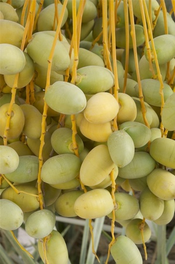

(noun
female)
species
kind of date-palm casting its fruit, unripe date

1: (kind of) date-palm (casting its
fruit), 2: unripe date
complete
38b
48a
ⲃⲉⲗϩⲱⲗ B v ⲃⲉϩⲱⲗ.
48a
ⲃⲉϩⲱⲗ S, ⲃⲉⲗϩⲱⲗ (var ⲃⲉⲣϩⲱⲗ) B, ⲃⲟⲩϩⲱⲗ F nn f (S), kind of date-palm, casting its fruit: Miss 4 695 = Z 531 S; but K 177 B = بلح بُسر unripe date; AZ 23 39 F artabae of ⲃ. & ϫⲁⲓⲧ (sic l),; O'LearyTh 14 B ⲛⲉⲧⲉⲛⲛⲟⲃⲓ ⲟⲓ ⲛⲟⲩϥⲉⲗϩⲱⲗ ⲉϥⲑⲣⲉϣⲣⲱϣ الصبغ الاحمر, where ⲃ. = φοῖνιξ (φοινικοῦς Is 1 18). Cf DM Indices p. 109.